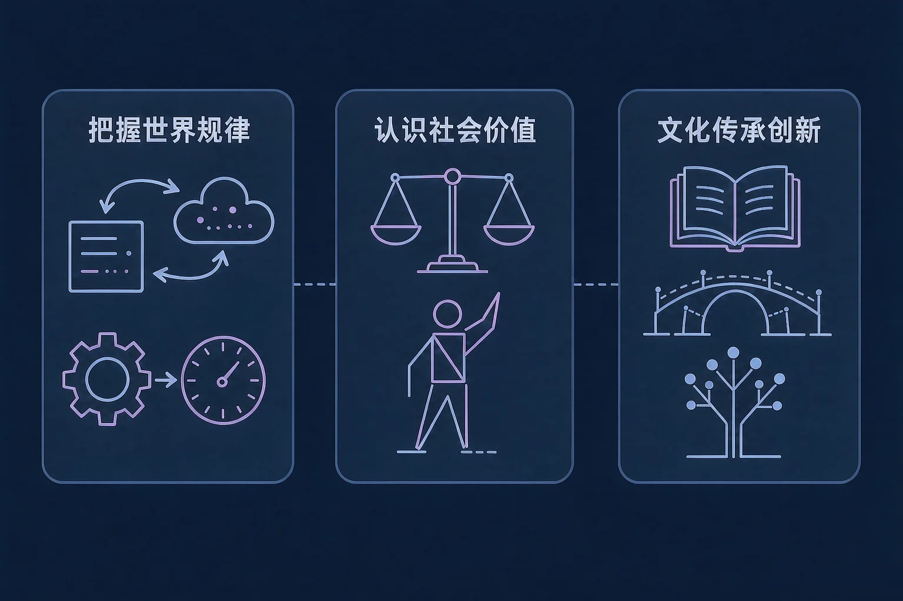
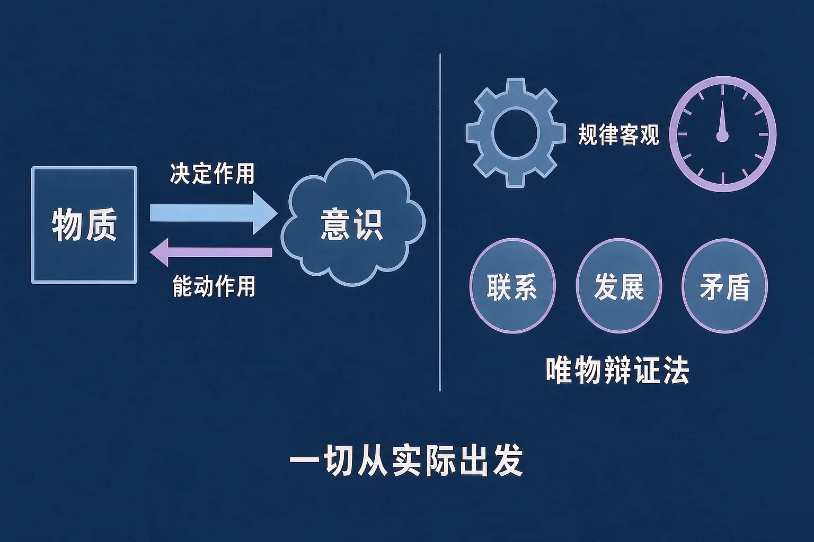
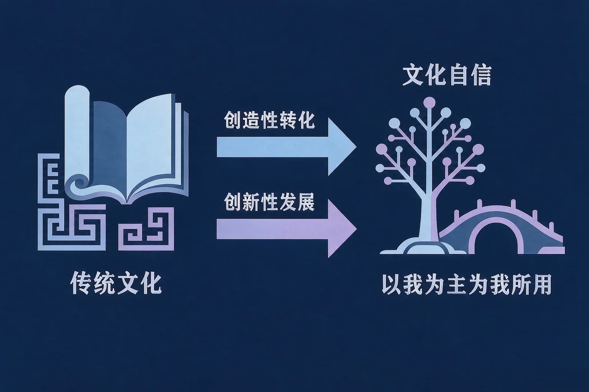

Gallery
v1.0.0 · skill v7.22.0
高中高二 · 哲学与文化
马克思主义哲学怎么看世界、怎么看人生，我们的文化又该怎么传承和创新？

选一个你真正想弄清的问题，后面的活动都会围着它转。
选择或输入后，这节课会围绕你的问题展开。
先凭直觉选一个，选完立刻看到解释——错了也没关系，正好知道要重点听哪里。
1. 关于物质和意识的辩证关系，下面哪一句表述准确？
物质决定意识，意识是物质的反映；同时意识对物质具有能动作用，能够能动地认识世界、能动地改造世界。错因提醒：常见错误是误认为意识决定物质，看到想法能影响行动，就以为想法可以决定客观事物——这一条关系不能颠倒。
2. 人们经过长期观察，掌握了某些自然现象的变化规律，从而能够提前防范、减少损失。这说明：
规律是客观的、普遍的，它不以人的意志为转移；人不能创造、改变和消灭规律，但可以认识和利用规律，为人类造福。错因提醒：容易搞混的是「发挥主观能动性」与「改变规律」——人改变的是自己的认识和做法，不是规律本身。
3. 关于文化自信，下面哪一句表述准确？
文化自信来自对中华优秀传统文化、革命文化和社会主义先进文化的自信；对待外来文化要以我为主、为我所用，学习借鉴外来文化的有益成果。错因提醒：常见错误是把文化自信误认为封闭排外，或者误认为全盘肯定本民族文化；这两种理解都不符合要求。
为什么要先弄清这一件事？
我们每天都在做判断、下决心（And）；但我们凭什么说自己的想法是对的、做事情该怎么入手，这件事往往只有零散的印象（But）；所以这节课先把世界的本质与世界的规律这一段看清（Therefore）。
先记住第一句话：世界是物质的世界，世界的真正统一性在于它的物质性；物质决定意识，意识是物质的反映。
意识的能动作用
意识对物质具有能动作用，能够能动地认识世界、能动地改造世界；正确的意识能够促进事物的发展。
规律的客观性与普遍性
规律是客观的、普遍的，不以人的意志为转移；人不能创造、改变和消灭规律，但可以认识和利用规律，所以必须一切从实际出发、实事求是。

坚持唯物辩证法，反对形而上学
联系具有普遍性和客观性，要用联系的观点看问题；发展是前进的、上升的变化，要用发展的观点看问题；矛盾是事物发展的源泉和动力，要坚持矛盾分析法，坚持两点论与重点论的统一。形而上学则用孤立的、静止的、片面的观点看问题。
三个高频错误：一是误认为意识决定物质；二是误认为随意两个事物之间都有联系——联系具有客观性，是事物本身固有的，不能主观臆造；三是把「变化」都当成「发展」——发展是前进的、上升的变化，一味追求眼前数量而损害长远基础，恰恰违背了发展的观点。
🔍 深层理解 换个角度再看一遍这件事，看看能不能说出背后的原理。
看见它：出门带伞是因为天气预报说今天有雨，村里选什么作物要先看气候和土壤——想法从客观条件来，做法要合乎客观实际。
拆开它：判断一条现象体现的是哪条哲理，先问三句：起作用的是客观条件，还是人的想法？有没有经过实践反复检验？看问题有没有既抓住重点又照顾全面？
迁移它：「一切从实际出发」这句话在生活里到处能用：制定计划先摸清自己的基础，锻炼身体先了解自己的身体状况，做研究先掌握真实材料。
先点一条生活现象，再判断它主要体现哪一条哲学道理。
先点上面一条生活现象。
为什么要弄清这两段？
我们已经知道世界的本质和规律（And）；但人怎么认识世界、社会历史靠什么推动、人生价值在哪里实现，我们自己的文化又该怎么传承和创新（But）；所以这节课要把这两段一起看清（Therefore）。

文化部分有两个必须避开的错误倾向：一是误认为文化自信就是封闭排外，对外来文化一概拒绝；二是误认为外来的就是先进的，盲目照搬、丢掉自己的文化根基。前者是文化复古主义，后者是全盘西化论，都是错误的。规范的要求是：以我为主、为我所用，学习借鉴外来文化的有益成果。此外，有的同学把「创新」搞混成另起炉灶、丢掉传统，创造性转化、创新性发展的前提是继承。
🔍 深层理解 换个角度再看一遍这件事，看看能不能说出背后的原理。
看见它：同一个博物馆，文物还是那件文物，换了一种讲法以后，愿意走近它的年轻人多了起来。传承不只有一种样子。
比较它：对待自己的文化和外来文化，有两组容易走偏的态度：一种是封闭自守、一概排斥；一种是盲目照搬、丢掉根基。正确的是既有自信，又善于学习。
迁移它：「在劳动和奉献中创造价值」不只是句结论，它可以用在日常里：把班级的事做实、把社区的事做好，价值就长在具体的事情上。
先点一条文化现象或做法，再判断它主要对应哪一项要求。其中有几项是需要我们警惕和纠正的，请仔细读。
先点上面一条文化现象或做法。
情境：某校政治学习小组整理出五条表述。请你当一次校对员，判断哪几条准确、哪几条必须改，并说明依据。
为什么第四条最容易写偏？
因为「联系是普遍的」这句话只讲了普遍性，没有讲客观性。普遍性说的是事物之间以及事物内部诸要素之间相互影响、相互制约、相互作用；客观性说的是这种联系是事物本身固有的。把两者合起来看，就既不会漏掉联系，也不会主观臆造联系。
还有两处容易搞混：一是把「发挥主观能动性」误认为可以改变规律；二是把「文化自信」误认为封闭排外。规范的表述是：尊重客观规律，把发挥主观能动性和尊重客观规律结合起来；文化上坚定自信，同时以我为主、为我所用。
先凭直觉选一个，选完立刻看到解释——错了也没关系，正好知道要重点听哪里。
1. 关于物质和意识的关系，下面哪一句表述准确？
物质决定意识，意识是物质的反映；同时意识对物质具有能动作用，能够能动地认识世界、能动地改造世界。错因提醒：两个常见错误要避开：一是误认为意识决定物质；二是误认为意识毫无作用。正确的关系是物质决定作用与能动作用的统一。
2. 「守株待兔」的故事里，种田人把偶然一次的经历当成必然规律，从此守着树桩等兔子。这个故事主要讽刺的是：
兔子撞上树桩是偶然事件，把它当成必然规律，属于主观臆造联系，也是用静止的观点看问题。错因提醒：常见错误是把联系的普遍性与客观性搞混——联系是普遍的，但联系是事物本身固有的，不能主观臆造；同时事物是变化发展的，不能一成不变地看问题。
3. 关于文化自信，下面哪一句表述准确？
文化自信来自对中华优秀传统文化、革命文化和社会主义先进文化的自信；同时要以我为主、为我所用，学习借鉴外来文化的有益成果。错因提醒：文化复古主义和全盘西化论都是错误的，把文化自信误认为封闭排外或者全盘肯定，都不符合要求。
先点一条情境，再判断它主要落在哪一个知识模块上。六条都归完类，你就得到了一张哲学与文化知识地图。
先点上面一条情境。
把你的判断写下来：
从六条情境里挑一条你最有感触的，用自己的话写一写：它落在哪个模块、体现了哪一条基本观点，为什么？
先凭直觉选一个，选完立刻看到解释——错了也没关系，正好知道要重点听哪里。
1. 某社区在推进老旧小区改造时，广泛听取居民意见，动员居民共同参与方案讨论。这体现的哲学观点是：
人民群众是历史的创造者，要坚持群众观点和群众路线。错因提醒：常见错误是把社会存在与社会意识的关系搞混——是社会存在决定社会意识，不是相反；同时价值观具有重要的导向作用，说它没有影响是不成立的。
2. 某实验小组在反复操作中发现原有结论并不完善，改进方案后得到了更可靠的结果。这说明了：
认识具有反复性、无限性和上升性，追求真理是一个永无止境的过程；实践是检验认识真理性的唯一标准。错因提醒：常见错误是误认为原有认识「一定错了」。原有结论可能是不完善的，随着实践的发展而不断修正和深化，这正是认识发展的正常过程。
3. 某校把中华优秀传统文化融入校园活动，同时组织学生了解世界优秀文化成果。这体现了：
坚定文化自信，推动中华优秀传统文化创造性转化、创新性发展；对待外来文化要以我为主、为我所用，学习借鉴外来文化的有益成果。错因提醒：容易把这种做法误认为「只要是外来的就要学」或者「只要守住传统就够了」——文化复古主义和全盘西化论都是错误的，正确的是既有自信，又善于学习。
一句口诀：世界本是物质身，意识能动不改真；联系发展看矛盾，两点重点要区分；实践检验出真理，群众路线记在心；传承创新有自信，以我为主取众长。
给别人讲一遍：请用「物质决定意识」「实践是认识的基础」「文化自信」这三个词，给家里人讲清楚：马克思主义哲学怎么看世界，我们的文化该怎么传承和创新。
再动一动手：记一记你身边一项中华优秀传统文化的具体形式（比如一种技艺、一个节日、一段地方戏），写清它在今天遇到了什么困难，你有什么让它更好传承的想法。
三层练习，做完第一、二层就算通关；第三层留给愿意继续探索的同学。
⭐ 基础巩固（必做）
⭐⭐ 能力应用（必做）
⭐⭐⭐ 迁移挑战（选做）
左边是学它之前要先会的，右边是学会之后可以继续探索的，下面是同一领域的伙伴知识。
图谱正在加载：首次进入需下载知识索引（约 1–3 秒），加载完成后本行会自动消失。